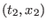

The InterPoly class approximates a continuous signal by fitting a polynomial to the available data points. The approximating polynomial passes through every available data point, and in many cases it provides a reasonable approximation to the original signal between the available data points. The most familiar example of an interpolating polynomial is a line that connects two data points and  . The connecting line is
An interpolating polynomial can be constructed with the InterPoly class in three ways. The first way is to provide the sample data to the InterPoly constructor
InterPoly(const double* u, const double* t, unsigned int n)where u is the array of data values, t is the array of time points, and n is the number of points (i.e., the size of the u and t array). The constructor builds an degree polynomial that fits the supplied data.
The second way is to supply just the data values, a time step, the first time value, and number of data points to the constructor
InterPoly(const double* u, double dt, unsigned int n, double t0 = 0.0)where u is the array of data values, dt is the time spacing of the data points, n is the number of data points, and t0 is the time instant of the first data point (i.e., the data point is at time ). Both of these constructors make copies of the supplied arrays, and changes to the array values will not be reflected by the InterPoly object.
The third way is to assign new data point values to an existing polynomial by calling the InterPoly method
void setData(const double* u, const double* t = NULL)where u is the new set of data values and the optional t array is the new set of time points. This method requires that the number of data points in u (and t if used) be equal to the number of points supplied to the InterPoly constructor.
There are three methods for computing interpolated values: the interpolate method, the overloaded operator(), and the derivative method. The method signatures are
double interpolate(double t) const double operator()(double t) const double derivative(double t) constThe interpolate method and operator() method give the value of the interpolating polynomial at the time point t. The derivative method gives the value of the first time derivative of the interpolating polynomial, which may be used as an approximation of the first time derivative of the original function. For example, if the data describes the position of an object through time then the derivative method gives an approximation of the object's velocity.
To demonstrate the InterPoly class and give you a sense of what the interpolating polynomials look like, I've listed below a program that computes , its time derivative , and interpolated approximations of both. Interpolating polynomials built with 4, 5, and 6 data point in the interval are illustrated in Figs. 13.1 and 13.2. The quality of the approximation generally improves as more data points are added, but the function and interpolating polynomial diverge significantly outside of the interval spanned by the data points. Be careful if you extrapolate!
#include "adevs.h"
#include <cmath>
#include <iostream>
using namespace std;
int main(int argc, char** argv) {
// Get the number of data points to use and allocate
// memory for the data points arrays
int N = atoi(argv[1]);
double* t = new double[N];
double* u = new double[N];
// Compute data points using the sin function
for (int i = 0; i < N; i++) {
t[i] = i*(2.0*3.14159/(N-1));
u[i] = sin(t[i]);
}
// Create the interpolating polynomial
adevs::InterPoly p(u,t,N);
// The data arrays can be deleted now
delete [] t; delete [] u;
// Compute several points with sin, its derivative, and the polynomial
// inside and a little beyond the interval spanned by the data
for (double t = 0; t < 2.0*3.14159+0.5; t += 0.01)
cout << t
<< " " << sin(t) << " " << p(t)
<< " " << cos(t) << " " << p.derivative(t)
<< endl;
// Done
return 0;
}